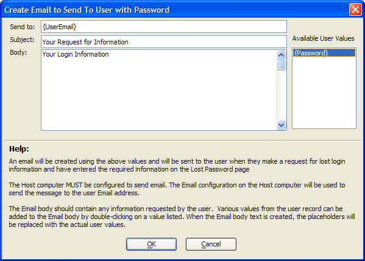

Create Email to Send to User with Password Dialog
The Create Email to Send to User with Password dialog defines the template for an email to send to a user who has requested lost login information and entered the required information on the Lost Password page. The host computer must be configured to send email.
Enter the email subject data into the Subject text box.
Enter text and and {Password} placeholder into the Body text box control. The application will replace {UserEmail} and {Password} with the user's email address and actual password when it sends the email.

Limitations
Web publishing applications only.
See Also